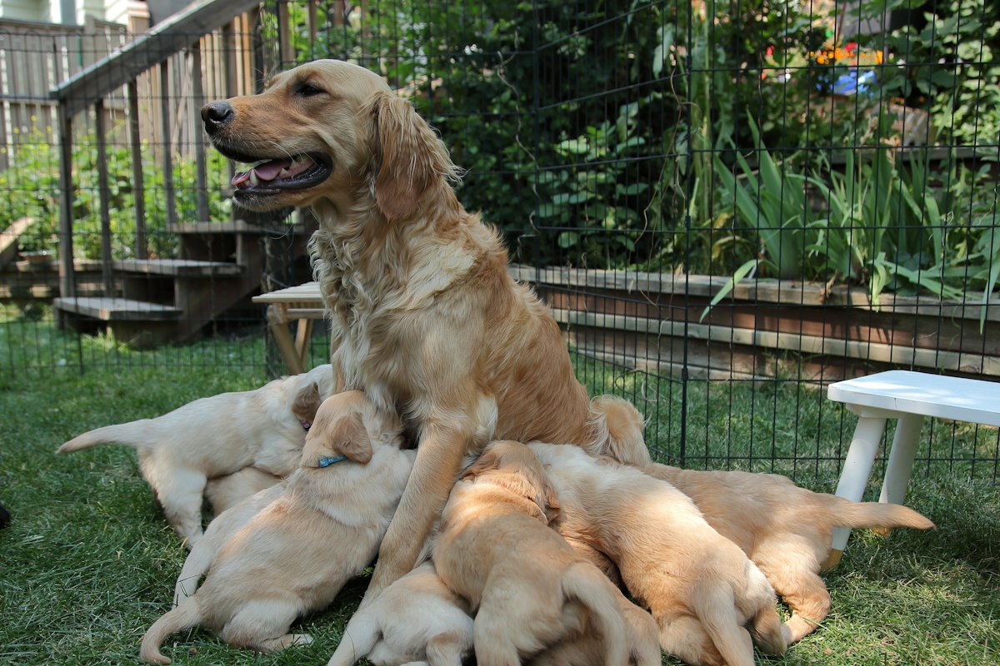
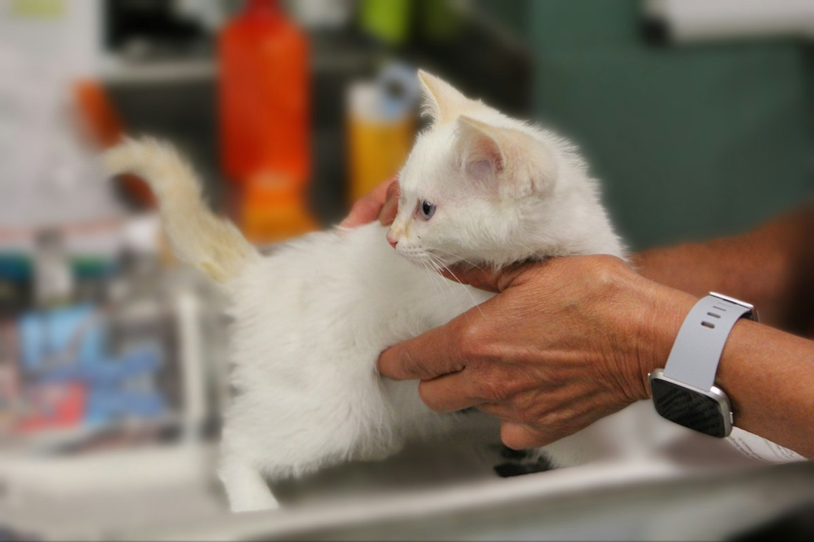
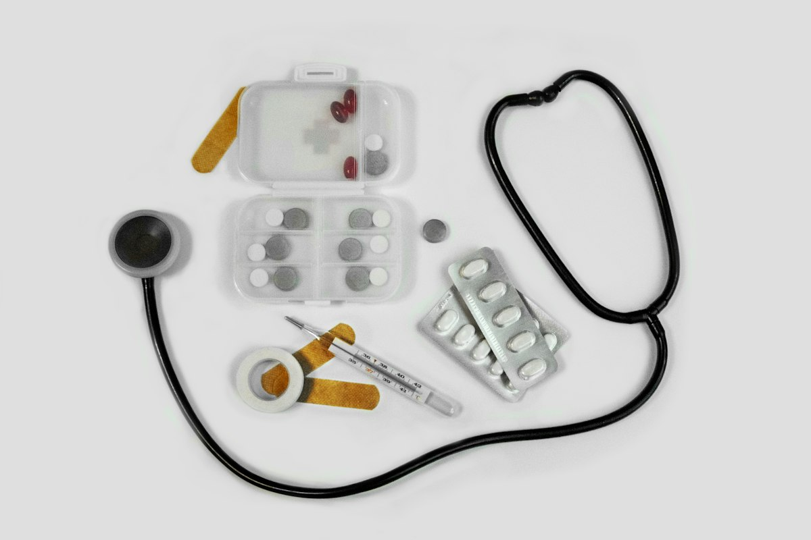
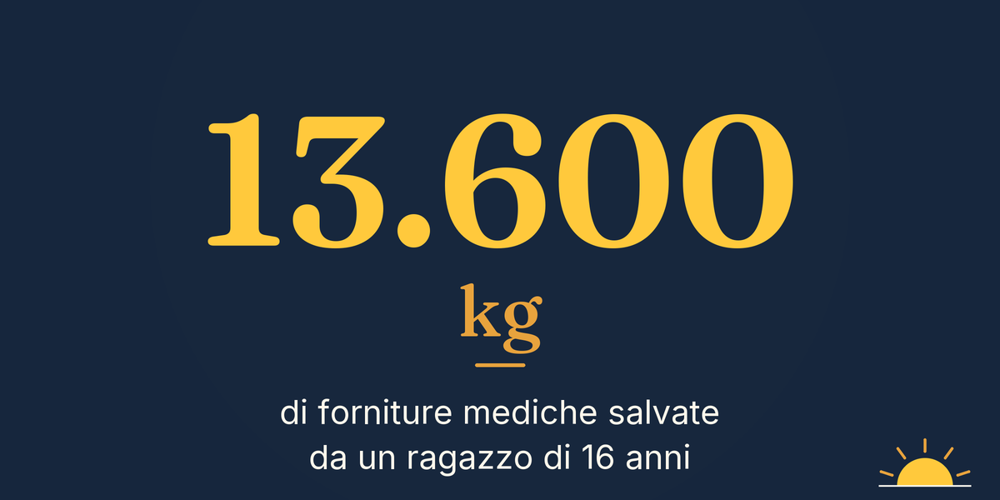

Numero 1 · 26 ottobre 2026
Florzinha non si è mai mossa
Il numero così come è arrivato agli iscritti.
Buongiorno
Una mamma che non lascia i suoi cuccioli sotto la pioggia. Un gattino che torna su da venti metri di buio. Un ragazzo di sedici anni che salva tonnellate di forniture mediche dalla spazzatura. E migliaia di persone che corrono per andare a trovare chi è solo.
Cinque minuti di storie vere. Buon lunedì.
La storia della settimana
Florzinha, la mamma che non si è mai mossa

Foto di repertorio · Anna Khromova / Unsplash
Pioveva da ore su un campo di canna da zucchero, in Brasile. Sotto le foglie piegate dall'acqua c'era una cagnolina con sette cuccioli, troppo piccoli per resistere al freddo. Qualcuno li aveva lasciati lì. Lei, Florzinha, aveva fatto l'unica cosa possibile: era rimasta accanto a loro.
Quando sono arrivati i volontari della Sovipa, un'associazione locale per la protezione degli animali, hanno trovato una madre affamata e sette piccoli stretti l'uno all'altro per scaldarsi. Un passante aveva lasciato loro del cibo, ma mancava la cosa più importante: un posto asciutto dove passare la notte.
Il problema era il numero. Non un cane da mettere al sicuro, ma otto, e nessuna sistemazione libera. L'associazione ha chiesto aiuto alla sua rete di volontari e sostenitori, con un'unica condizione: portarli via tutti insieme, senza separare la famiglia.
Alla fine ci sono riusciti. Una scatola sul sedile di un'auto è diventata per qualche minuto la loro casa: otto musi bagnati, al riparo, diretti verso un posto caldo. Secondo il racconto della Sovipa, quando i soccorritori si sono avvicinati, mamma e cuccioli li hanno accolti scodinzolando.
Col tempo i piccoli sono cresciuti lontano dal campo e, uno dopo l'altro, hanno trovato una famiglia: sei su sette sono stati adottati. Florzinha intanto è stata curata, sterilizzata e ha fatto la prima dose del vaccino. I volontari la descrivono affettuosa ed energica, come se la strada fosse già lontana.
Poi è arrivata l'ultima notizia: anche Florzinha ha una casa sua. Manca solo Paulina, una delle sue figlie, che aspetta ancora qualcuno.
Fonte: Isabella Amato, La Zampa (La Stampa), 8 ottobre 2026, dal racconto dell'associazione Sovipa — leggi l'articolo
Le buone nuove
Venti metri di pozzo, un gattino salvato

Foto di repertorio · Judy Beth Morris / Unsplash
A Castel San Giorgio, in provincia di Salerno, un gattino è caduto in un pozzo profondo oltre venti metri, così stretto che nessuno poteva calarsi a prenderlo. Ci è rimasto due giorni, al buio. Sono stati i suoi miagolii ad avvisare i proprietari della casa.
La soluzione è arrivata dalla Protezione Civile: una gabbia-trappola con del cibo dentro, calata piano piano fino in fondo. Il primo tentativo è fallito, la porticina si è chiusa troppo presto. Al secondo, dopo un quarto d'ora di attesa, il gattino è entrato. La gabbia è risalita con lui.
Fuori si è rivelato un micio dolce e affettuoso, quasi certamente un gatto di casa che si era perso. Il pozzo ora è stato messo in sicurezza. La Garante per gli animali del Comune, Maria Piselli, ha raccontato quel momento così: «La gioia in quel momento è stata indescrivibile per tutti noi».
Fonte: SalernoToday, 6 ottobre 2026 (il salvataggio è del 4 ottobre) — link
Ben, 16 anni, salva le forniture degli ospedali

Foto di repertorio · Julia Zyablova / Unsplash
Gli ospedali buttano ogni giorno materiale sterile e ancora utilizzabile, solo perché è vicino alla scadenza. Ben Kurian, 16 anni, studente in Ohio, ha avuto un'idea durante una cena in famiglia: recuperarlo e mandarlo dove manca.
Ha scritto ai grandi distributori e agli ospedali della zona, come OhioHealth, e ha trovato un partner per le spedizioni: una fondazione no profit di Pittsburgh. Il suo progetto si chiama Project MedBridge. Il primo carico è partito ad agosto.
Da allora ha recuperato circa 13.600 chili di materiale, soprattutto mascherine e impacchi caldo-freddo, per un valore stimato di 250.000 dollari. Le spedizioni sono arrivate a centri per la salute delle mamme in Nigeria e a strutture in Ucraina. Per continuare ha ottenuto un finanziamento di 7.500 dollari da un programma per giovani leader.
«Sono forniture perfettamente utilizzabili e sterili», spiega Ben. Basta farle arrivare dalla parte giusta.
Fonte: Anika Nayak, Reasons to be Cheerful, 9 ottobre 2026 — link
Correre per chi è solo
Foto di repertorio · McCarthy Beckan / Unsplash
Nel Regno Unito esiste un gruppo che ha trasformato la corsa in una visita. I volontari di GoodGym camminano, corrono o pedalano fino a casa di anziani che vivono soli, per una commissione o due chiacchiere, oppure verso un progetto del quartiere: piantare alberi, smistare la spesa per un banco alimentare. Poi ripartono. È gratis e può partecipare chiunque abbia più di 18 anni.
Un gruppo di ricercatori del King's College di Londra e della London School of Economics ha seguito per un anno quasi 2.900 iscritti, confrontando chi partecipa con chi si è iscritto ma poi non è mai andato. Chi partecipa sta meglio: meno problemi di salute mentale, meno solitudine, più fiducia negli altri e più senso di appartenenza. L'effetto si vede anche in chi partecipa di rado, e dura oltre sei mesi.
C'è anche un conto economico: GoodGym spende circa 60 sterline per ogni volontario, mentre il beneficio stimato per ciascuno è di circa 2.400 sterline. L'aiuto, insomma, torna indietro.
«Sport e volontariato possono essere strumenti potenti contro la crescente crisi della salute mentale», dice Maria Cotofan, la ricercatrice che ha guidato lo studio.
Fonti: Cotofan, Krekel, Oparina, «Getting fit by doing good», Social Science & Medicine, 2026 — lo studio, ad accesso libero · citazione da Positive News, 23 ottobre 2026 — link
Il numero della settimana

13.600 — i chili di forniture mediche che un ragazzo di sedici anni ha tolto dalla spazzatura e mandato a chi ne aveva bisogno.
La micro-azione
Questa settimana: un vicino. Pensa a una persona anziana che vive da sola, nel tuo palazzo o nella tua via. Una telefonata, la spesa portata su, dieci minuti di chiacchiere. Non serve correre come a Londra.
E se conosci una storia vera che merita di essere raccontata, rispondi a questa email: la verifichiamo e, se regge, entra in uno dei prossimi numeri.
Come abbiamo verificato questo numero
Abbiamo letto per intero ogni articolo citato e controllato nomi, date e numeri prima di scrivere. Florzinha: il racconto è dell'associazione Sovipa, riportato da La Zampa. Non l'abbiamo verificato in modo indipendente. Gattino: date e citazione dall'articolo di SalernoToday. Ben Kurian: numeri e citazione da Reasons to be Cheerful. GoodGym: abbiamo letto per intero lo studio scientifico originale (ad accesso libero); numeri e risultati vengono da lì, la citazione della ricercatrice da Positive News. Ogni fonte è linkata, così puoi controllare anche tu. Se troviamo un errore, lo correggiamo nel numero successivo, con la data.
Newsletter indipendente, non registrata come testata giornalistica. Ti è arrivata da un amico? Iscriviti su buonaluce.it